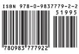

The standard color wheel you are currently using is made from the three primary colors - red, yellow and blue - widely used today. It works great. My Goof-Proof Color system is based upon a quasi-scientific approach used in the paint mixing industry (Munsell). It is based, not on three primary colors, but five primary colors – red, yellow, green, blue and purple and five secondary colors.
The spinning diamond-shaped arrow points to one main color – your overall dominant color in the painting. The color opposite your dominant color pointer can be the focal point in the painting.
The remaining two points will point to two additional colors called the “spice” colors. So there you have it. One dominant overall color, one focal point color. The two spice colors do exactly as their name implies – they add spice when placed close to the focal color.
Here’s how Color Works for Me
I have found that my paintings have a dominant overall color. In fact, I refer to my paintings as “my red painting,” or “my green painting” and so on.
Step 1. The Dominant Color. The first few minutes on my painting, I stick to one dominant color, working out the dark areas and the light areas. I work on the different value tones at this time. One dominant color, using dark and light values of this one color.
Step 2. Focal Point Color. The color opposite the dominant color is your focal point in the painting. Used sparingly and only around the center of interest on the painting, this color will add a visually pleasing contrast and excitement around the focal area. Consequently, if used
haphazardly all over the painting, it may tend to cancel itself out as a focus. You might see that the second color might be visual chaos if used in too many places, and defeats the effectiveness of one focal point.
For instance the color Red is the reddest when Blue-Green is the focal point. A still life with lots of red apples plus warm red colors overall could appear redder when you add a single Blue-Green wine bottle to the composition. Or a still life of a pile of juicy oranges will be even more orange if a blue vase is a focal point.
Step 3 & 4. Now add the two Spice Colors around the focal point color. Kick up that focal point color by adding a pinch of these two colors. They will increase visual excitement when placed near the center of interest. Think of these two colors as the two characters in a play that add spice or comic relief. They are refreshing and actually add visual spice to the mix when used sparingly and as equal partners.
Goof-Proof Paint Sketching
Practice this: Make several small abstract paint sketches based on what I’ve just described. See above paint sketch examples.
My Goof-Proof Color Wheel will also help you mix bright and clean color mixes. The color wheel is divided into 4 equal sections. For bright mixes, stay within each section. For dull mixes, cross over to another section and the color mix will gray down. Another feature – if you “gray down” the focal point color, you can use that diluted grayed down color in a much larger area and not just around the focal point. This will appear to make the dominant color more intense.
Summary.
- The painting can have an overall Dominant color.
- Use the focal point color sparingly or you can gray the color down and use it in a larger area.
- Two spice colors may be sprinkled sparingly near the focal point color.
Note: I also use black and white paint along with these four colors.
Burridge©2012 Robert Burridge
www.RobertBurridge.com
